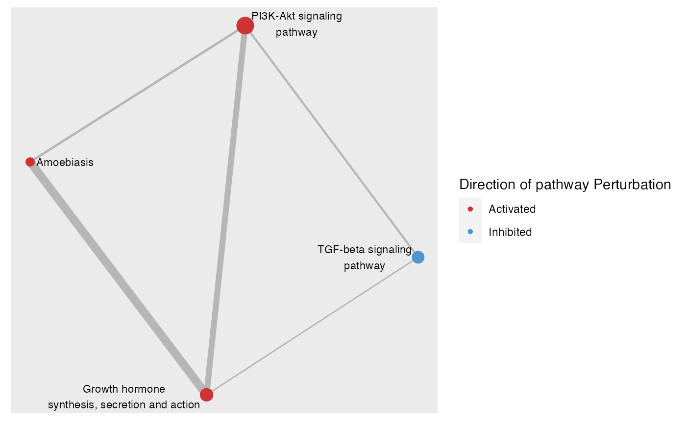
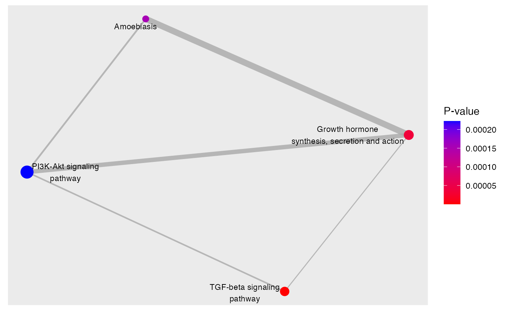

Plot significantly perturbed gene-sets as a network
plot_gs_network(
normalisedScores,
gsTopology,
colorBy = c("robustZ", "pvalue"),
foldGSname = TRUE,
foldafter = 2,
layout = "fr",
edgeAlpha = 0.8,
up_col = "brown3",
down_col = "steelblue3",
scale_edgeWidth = c(0.5, 3),
edgeLegend = FALSE,
scale_nodeSize = c(3, 6),
nodeShape = 16,
color_lg = TRUE,
color_lg_title = NULL,
lb_size = 3,
lb_color = "black",
plotIsolated = FALSE
)A dataframe derived from the normalise_by_permu() function
List of pathway topology matrices generated using function retrieve_topology()
Choose to color nodes either by robustZ or pvalue A column must exist in the normalisedScores for the chosen parameter
logical. Should long gene-set names be folded into two lines
The number of words after which gene-set names should be folded. Defaulted to 2
The layout algorithm to apply. Accept all layout supported by igraph
Transparency of edges. Default to 0.8
The color used to label activated gene-sets. Only applicable if colorBy is set to be "robustZ"
The color used to label inhibited gene-sets. Only applicable if colorBy is set to be "robustZ"
A numerical vector of length 2 to be provided to ggraph::scale_edge_width_continuous() for specifying
the minimum and maximum edge widths after transformation. Defaulted to c(0.5, 3)
logical` Should edge weight legend be shown
A numerical vector of length 2 to be provided to ggplot2::scale_size() for specifying
the minimum and maximum node sizes after transformation. Defaulted to c(3,6)
The shape to use for nodes
logical Should color legend be shown
Optional. Title for the color legend
Size of node text labels
Color of node text labels
logical.Should nodes not connected to any other nodes be plotted. Default to FALSE
A ggplot2 object
load(system.file("extdata", "gsTopology.rda", package = "sSNAPPY"))
load(system.file("extdata", "normalisedScores.rda", package = "sSNAPPY"))
#Subset pathways significantly perturbed in sample R5020_N2_48
subset <- dplyr::filter(normalisedScores, adjPvalue < 0.05, sample == "R5020_N2_48")
# Color network plot nodes by robust z-score
plot_gs_network(subset, gsTopology,
colorBy = "robustZ", layout = "dh",
color_lg_title = "Direction of pathway Perturbation")

# Color network plot nodes by p-values
plot_gs_network(subset, gsTopology, layout = "dh",
colorBy = "pvalue", color_lg_title = "P-value")
